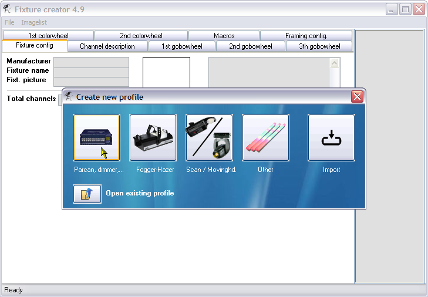

Table of Contents

Fixture Creator Tutorial - Par Cans, Dimmer Packs, Switch Packs
WORK IN PROGRESS - ONGE
This tutorial for the FreeStyler Fixture Creator is possibly the easiest to master of all.
This tutorial is going to use the “Par Can, dimmer,…” option, when you first start the Fixture Creator, but I will be going into other options of the Fixture Creator because of the limitations of this option.
I will go through setting up various types of fixtures using this option such as a Par Can, a Dimmer Pack and a Switch Pack.
Par Can
Start Fixture Creator and you should see the following.

Click the “Parcan, dimmer,…” button on the Create new profile dialogue.
Now you are on the “Fixture config.” tab, and you can see it only has a few fields that you can fill in, because lets be honest what can you do with a Par Can ? Answers on a post card to …, no seriously a Par Can only has the ability to be dimmed (intensity), I do not want anyone extremely technical (super geeky) to say “Well actually you can do this with Par Cans…”.
I will now explain the fields that are available on this screen.
- Manufacturer - This field hold the manufacturer of the fixture you are creating, please use the manufacturers full name for example American DJ rather than ADJ. The reason for this is because FreeStyler and Fixture Creator, create an internal list of the Manufacturers as folders to help you locate fixture files easier. If you are modifying fixtures or want to store all the fixtures you use in one place, then you could create a “custom” manufacturer, for example I might use a manufacturer name of “AndreCustom”.
- Fixture name - Use the manufacturers full name of the fixture, include what mode and/or the number of channels if possible, only if it is relevant. As we are creating a Par Can that would not be necessary. Again if you are modifying fixtures from the standard or testing things out then possibly add to test or something to the end of the name, to distinquish it from the standard fixture.
- Fixt. picture - This field hold the name of a picture of the fixture that will be displayed to the right of these fields. I do not actually type the filename in this field, I use the list of fixture pictures displayed to the far right. These picture files are stored in the FreeStyler/Fixtures folder and are in gif format. The size of the picture should be around 60×60 but you can use other sizes but this size will not cause the picture to cover up the comments box if the width is higher. You need to use a picture as this is what you will click on in FreeStyler to select what fixture you want to control. Ensure you have selected this field before using the list to the right.
- Total channels - This field hold the total number of channels your fixture has. The maximum number of channels that FreeStyler and the Fixture Creator support is 33. To use fixtures that have more than this number of channels in FreeStyler and the Fixture Creator takes a bit of creative thought but is not for this tutorial.
- Fixture Picture - The square box to the right of the Manufacturer, Fixture name and Fixt. picture fields is the area wher the fixture picture will be displayed.
- Comment Box - Use this text box to add any relevant comments, I normally put the full manufacturer, fixture name, mode, no. of channels, my name, if the fixture has been tested or not. Put anything in here that will help people when they look at the fixture profile in Fixture Creator and when they are possibly going to select it in FreeSyler>Setup>Add/Remove fixtures.
Here you can see I have filled in all the fields. I have used the name Generic for the manufacturer as it does not really matter, in FreeStyler there are already Par Cans created and can be found in the PAR 64 and the PARCAN folder, possibly in other places as well, for this tutorial Generic will do just fine. The name is PAR56 Red, because maybe this has a red filter on the front of it, this is one of the reasons why it is important to try and name your fixtures as descriptive as possible as it makes it easy to select. The Fixt. name was selected from the list to the right. Also I have added some basic comments.
Well that is all we need to do on this tab.
Click on the Channel description tab and you are displayed the above screen.
I have already filled in the Description and have changed the Locate value. The description is what this channel of the fixture does and is used on the sliders that are on the right of the FreeStyler screen when you select the fixture(s). I have called it Dimmer because that is what it does, dims the light intensity up and down.
The Locate field is used to set a value for this channel to be sent to the fixture when you are in FreeStyler and you right click on the fixture and the select Locate selected fixtures, this makes it easier to identify where in the real world they are “located”. I have set the “intensity” to 128 or 50% so it will not be to bright but will be enough to see it clearly.
The default field is used to set a value that will be used by FreeStyler when we first start to program them, normally 0 (zero) but for example on a moving head or scanner you might want to set the pan/tilt to 128, which would be a centre position.
More info on these values can be found here on the Channel Description page.
Well that is all we have to do and is all we can do with this fixture, so now we save the fixture.
Select File>Save.
The above save dialogue will be displayed.
Note that I have added the Generic part to the front of the File name. I always add the manufacturers name to the front of the file name as it makes it easier to identify in the FreeStyler/Fixtures folder when I am browsing that, as I mentioned earlier that FreeStyler and Fixture Creator creates an internal list of manufacturers. The fixtures are not actually stored in physical folders named after the manufacturer. You do not have to do this but I think it is a good practice.
Click the Save button.
Now to export the fixture. I always export my fixtures after I have modified or created them. I keep the in a seperate folder away from the FreeStyler install folders, that way I can easily import them back in after i have done a fresh or an update install and have cleared all the fixtures. It is also the what you need to do if you want to upload any fixtures you have created to the support forum either for others to use or for help. The exported file contains everything thet FreeStyler and the Fixture Creator need to use it. Also export your fixtures to transfer them to another computer.
Select File>Export.

The Save dialogue appearsThe file name with the Generic part has already been filled in because that is the file name we used when we just saved the fixture.
Click the Save button.
That is it, we have just created a fixture for a 1 channel Par Can and you have learnt about some of the fields, tabs and options you can use in the Fixture Creator.
If you wanted to you could create a fixture for multiple numbers of Par Cans by changing the number in the Total channels field and the Description, Locate and Default values fields on the Channel description tab, but there are problems with doing it this way, see Limitations and work arounds below.
Dimmer Packs
A dimmer pack is device that allows you to control the intensity level on a fixture that does not have a built in dimmer. Most Par Cans do not have built in dimmers and would need to be connected to a dimmer pack.
So to create a 1 channel dimmer pack you would do exactly the same as explained above for the Par Can.
To create a multi-channel dimmer pack you would just increase the number of channels in the Total channels field, and the Description, Locate and Default values for each channel on the Channel Description tab.
There are problems in doing things this way and I will explain in the section titled Limitations and work arounds that follows later in this tutorial.
Switch Packs
Switch packs are similar to dimmer packs but they only have two value that can get accepted from the DMX controller and that normally is 0 (zero) and 255, which would be used as off and on, which is why it is called a switch, use a switch pack if you want to control a fixture that cannot be controlled by DMX and is normally controlled by a press off/on switch on a remote.
This sort of fixture is not really suitable to be created by the Parcan, dimmer,… option of the Fixture Creator, but it can be done, just in the same way as described above for a Par Can or a dimmer pack, but you would need to ensure that the values used would be only 0 or 255 to trigger the switch.
As you can see this is a bit of a problem and you would really want something to ensure you hit those values everytime and easily. I will explain more in the Limitations and work arounds section below.
Limitations and work arounds
As mentioned above there are problems in creating multi channel versions of Par Cans or Dimmer Packs. There are problems trying to create either a single channel or mult-channel switch packs.
Multi-channel Par Cans and Dimmer Packs will not actually have available the “Lamp” panel in FreeStyler. So you will only have control of the channels using the sliders at the right edge of the screen. The Blackout button and Master Intensity control still work.
Possibly the most sensible way would be to patch a single channel fixture profile for each of the fixtures that are connected to the dimmer pack channels rather than a multi-channel fixtures, but that does depend on your screen “real-estate” and how many fixtures you are trying to control. Trying different ways will tell you the most efficient way for you to work and control the fixtures.
Switch Packs, the best way to create these would be to use the “Other fixture type as seen below.
Select the Other button.
Enter a Manufacturer, Fixture Name, Total channels to 1, set the Shutter channel to 1 with values of 0 for Off and 255 for On. This will enable the fixture to react to the Blackout button and you can use the Shutte control on the Lamp panel.
On the Macros tab I have created two macros, one for Off and one for On as alternate method to control the switch.
Again if you are using a multi-channel switch I would patch single channel switches for each of the channels on the multi-channel switch, to give you more flexabilty of control.